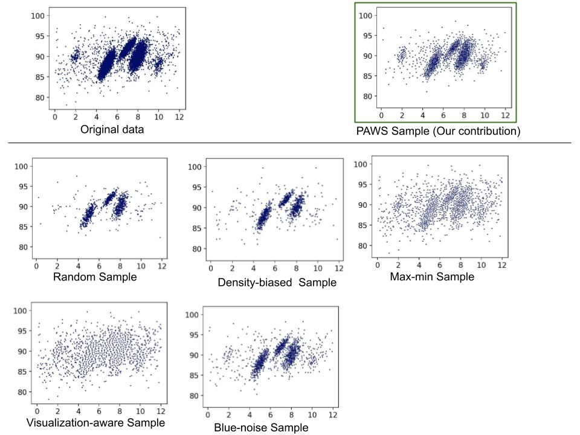
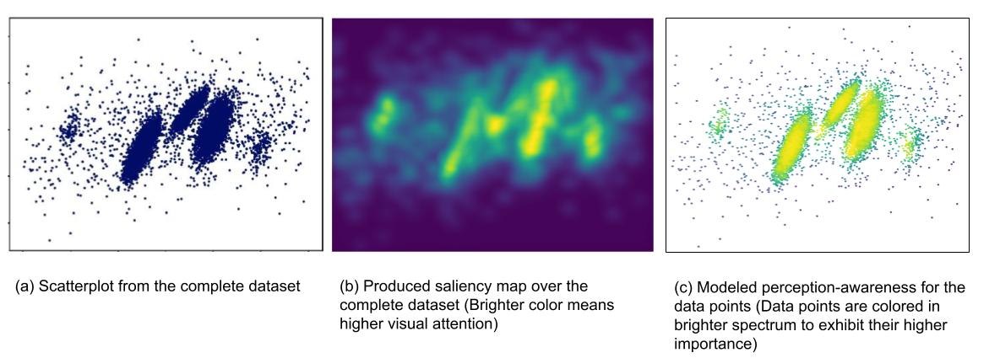

Perception-aware Sampling for Scatterplot Visualizations
Zafeiria Moumoulidou, Redwan Ahmed Rizvee, Alexandra Meliou
Zafeiria Moumoulidou: Collaborator (Currently at Facebook) Redwan Ahmed Rizvee: PhD Student (UMass Amherst) Alexandra Meliou: Primary Investigator (UMass Amherst)
Other Collaborators: Hamza Elhamdadi (Stonehill College), Ke Yang (University of Texas at San Antonio),
Subrata Mitra (Adobe Research), Cindy Xiong Bearfield (Georgia Tech).
Visualizing data is often central in data analytics workflows, but growing data sizes pose challenges due to computational and visual perception limitations (e.g., visual clutter).
As a result, data analysts commonly down-sample their data and work with subsets. Deriving visually representative samples, however, remains a challenge. We focuses on scatterplots, a widely-used visualization type, and introduces a novel sampling objective—perception-awareness—aiming to improve sample efficacy by targeting how humans perceive a visualization.
Key Contributions
Existing sampling methods frequently optimize for preserving data-driven properties like outliers, relative densities, or spatial separation. However, even when statistical properties are preserved, they may appear distorted to human users if the sampling algorithm ignores human visual perception. To address this, we introduce the following core contributions:
Perception-Aware Sampling (PAWS): A novel data selection method built on top of perception-augmented databases. It leverages computer vision techniques (saliency maps) to predict human attention focus by modeling perception-awareness. It applies coverage objective to include all the visually important (salient) regions of the scatterplot so that the sample remains representative of the original data from a visual perspective.
Perceptual Similarity Metrics: The introduction of perceptual similarity as a metric for sample quality, utilizing established image similarity metrics (like SSIM) to compare saliency maps across visualizations.
Robust Evaluation: Extensive experimental evaluations and a comprehensive user study demonstrating that PAWS consistently outperforms prior art in maintaining structural similarity and is significantly preferred by human analysts.

Figure 1: A visual comparison of samples generated by different algorithms. The original scatterplot (top row, leftmost) contains three main clusters and two smaller trends.
Our contribution, PAWS (top row, rightmost) preserves the core three clusters along with the two smaller trends more visibly than the other methods.
The dataset contained 10,150 points. Samples were generated with around 15% of the original data.
Methodology Overview
1. Modeling Perception-awareness via Saliency
Our objective is that, an effective sample should preserve all the visually salient areas of the original dataset.
In this regard, we leverage saliency maps (Figure 2b) to model perception-awareness by generating heatmaps predicting eye-gaze locations.
Through this awareness modeling, we computationally ensure more importance to the data points that form the regions of human visual attention within the plot (Figure 2c).

Figure 2: Modeling perception-awareness using saliency maps.
2. The PAWS Algorithm
PAWS balances saliency with global data coverage. Based on the Max-Min (farthest point) diversification heuristic, PAWS greedily builds a sample by selecting points that maximize a multiplicative score of their perception-awareness importance and their distance from already sampled points.
This penalizes points with low awareness importance or those too close to the existing sample.
Figure 3: An animation to observe how PAWS works. PAWS iteratively selects points by balancing visual saliency with spatial coverage.
Interactive Demonstrations
Experience the performance of Perception-Aware Sampling directly in your browser. We have prepared two interactive environments to showcase the failure points of traditional sampling and the advantages of the PAWS methodology.
If you find this work useful in your research, please consider citing our paper:
@article{moumoulidou2025perception,
title={Perception-aware Sampling for Scatterplot Visualizations},
author={Moumoulidou, Zafeiria and Elhamdadi, Hamza and Yang, Ke and Mitra, Subrata and Bearfield, Cindy Xiong and Meliou, Alexandra},
journal={arXiv preprint arXiv:2504.20369},
year={2025}
}